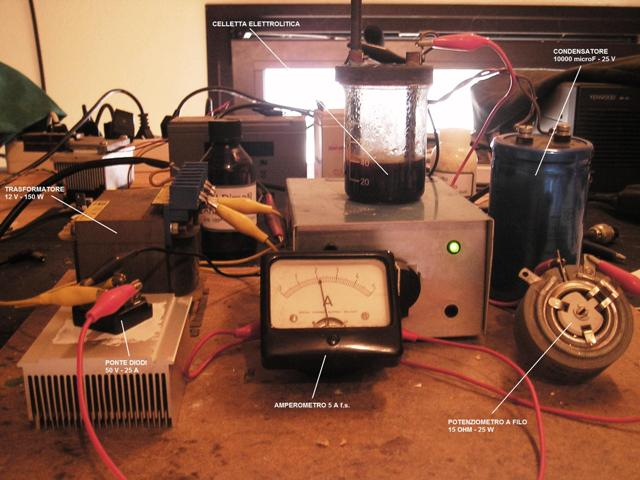
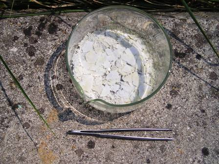

Il 10 aprile 2010 (post n.25) ho presentato la sintesi elettrolitica del bromato di potassio KBrO3; poichè è stato un lavoretto di soddisfazione, ho ripetuto l'esperienza sostituendo lo iodio al bromo e facendo stavolta la sintesi dello iodato di potassio, KIO3.
Le modalità operative ricalcano in gran parte l'esperienza precedente, alla quale quindi rimando per quanto riguardo la parte introduttiva e generale.
Volevo verificare se anche l'ossidazione dello ioduro a iodato per via elettrolitica fosse possibile con una resa decente, portando a buoni risultati (cosa che fortunatamente si è verificata).
Come alimentazione elettrica della celletta ho usato il semplicissimo alimentatore di cui metto lo schema, che si è dimostrato adattissimo per questo tipo di esperimenti, senza dover scomodare complessi alimentatori stabilizzati, certamente efficienti ma del tutto superflui per questo scopo.

La fotografia mostra l'alimentazione della celletta con l'accrocco elettrico assemblato in maniera volante e provvisoria, prima di essere debitamente inscatolato per gli usi futuri; in primo piano l'indispensabile amperometro e a destra il potenziometro ceramico a filo per la regolazione della corrente.
La celletta è posta sopra il solito agitatore magnetico, tenuto in funzione durante tutta l'elettrolisi per evitare la disomogenea distribuzione dello iodio attorno all'anodo.

L'"incasinamento" del banco di lavoro è dovuto proprio alla sperimentazione pratica dell'alimentatore... la prossima volta sarà molto più ordinato!
Materiale occorrente:
Potassio ioduro KI
Potassio bicromato K2Cr2O7
Cella elettrolitica (ved. post dedicato)
Alimentatore regolabile in corrente 0-5 Ampere
Sono partito da 20 g di KI, sciolti in 40 ml di acqua, aggiungendo i soliti 50 mg di bicromato come catalizzatore.
Anche in questo caso l'ossidazione è molto lunga (circa 10 ore a 3 A); appena data corrente si separa iodio al'anodo e la soluzione scurisce fortemente, rimanendo tale fino alla fine dell'operazione; si ha ovviamente anche forte riscaldamento per effetto Joule e ogni tanto va quindi aggiunto qualche ml di acqua per riprstinare quella evaporata o decomposta per elettrolisi.
Non si deve esagerare nella densità di corrente (A/cmq) altrimenti si ha proprio elettrolisi dell'acqua e formazione di ossigeno all'anodo, cosa da evitare.
Una corrente media di 3 A su pochi cmq di elettrodo è un buon compromesso.
Ad un certo punto comincia a separarsi lo iodato: è conveniente filtrarlo un paio di volte durante l'operazione e continuare l'elettrolisi fino a quando non se ne forma più e diventa sempre più evidente la decomposizione dell'acqua.
Lavare opportunamente il precipitato con acqua molto fredda e ricristallizzarlo da acqua; all'inizio è grigio per le piccole tracce di carbonio derivanti dagli elettrodi, ma dopo un paio di ricristallizzazioni la parte scura rimane aderente alla carta da filtro e lo iodato è perfettamente incoloro e cristallino.
La resa, partendo da 20 g di KI è stata di 14 g di KIO3, quindi del 55% comprese tutte le perdite: direi che non sarà semplice aumentarla e la ritengo del tutto soddisfacente.

Questi 14 g di KIO3 sono stati destinati a miglior causa, ovvero alla sintesi del periodato di potassio KIO4 per ulteriore ossidazione in altro modo, come si vedrà in un successivo post dedicato.
Stay tuned!